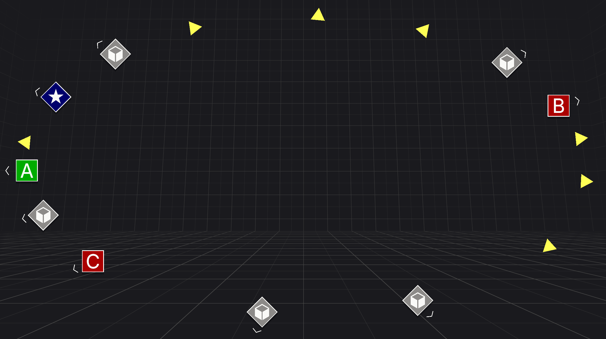

Target Indicators
Target Indicators is a Unity package that enables you to easily create visual indicators to track targets. Use target indicators to guide users to points of interest, waypoints, other players, or any other 3D point. Customize your indicators to your project's needs.
Works with any UI system, providing an API to get the screen pose of any 3D point or transform in screen space and bounded by your configuration. Included are Samples that can be used as a drag and drop system for a low code solution or a reference for how to use the target indicators API.
Note
Get Target Indicators on the Unity Asset Store.

Features
Target indicators focuses on simplicity and high performance including:
- Highly configurable at edit time and runtime
- Does not rely on
Object.Findor any variations of scene searching at runtime - Does not rely on
GetComponentcalls - Minamal one time persistent heap allocations at startup that are only disposed when you are done with Target Indicators
- No post initialization heap allocations, keeps performance high.
- Can be used with any UI system*
- Simple and minmal samples scenes
- Works with traditional display and in XR
- Includes a debug visualizer to understand how your indicators will be bounded
Note
*The package has a dependency on com.unity.ugui to support the samples and demo scenes.
Preview
The following describes the capabilities you can expect from Target Indicators:
Rectangle boundary that adjusts with screen size

Ellipse boundary that adjusts with screen size

Rectangle boundary with constant size

Ellipse boundary with constant size

Compass tape boundary

No boundary

Multiple boundaries